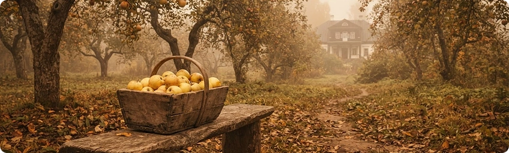

Антоновские яблоки
I

Вспоминается мне ранняя погожая осень. Август был с тёплыми дождиками, как будто нарочно выпадавшими для сева, — с дождиками в самую пору, в середине месяца, около праздника св. Лаврентия. А «осень и зима хороши живут, коли на Лаврентия вода тиха и дождик».
Потом бабьим летом паутины много село на поля. Это тоже добрый знак: «Много тенетника на бабье лето — осень ядрёная»... Помню раннее, свежее, тихое утро... Помню большой, весь золотой, подсохший и поредевший сад, помню кленовые аллеи, тонкий аромат опавшей листвы и — запах антоновских яблок, запах мёда и осенней свежести.
Воздух так чист, точно его совсем нет, по всему саду раздаются голоса и скрип телег. Это тархане, мещане-садовники, наняли мужиков и насыпают яблоки, чтобы в ночь отправлять их в город, — непременно в ночь, когда так славно лежать на возу, смотреть в звёздное небо, чувствовать запах дёгтя в свежем воздухе и слушать, как осторожно поскрипывает в темноте длинный обоз по большой дороге.
Мужик, насыпающий яблоки, ест их с сочным треском одно за одним, но уж таково заведение — никогда мещанин не оборвёт его, а ещё скажет: «Вали, ешь досыта, — делать нечего!»
И прохладную тишину утра нарушает только сытое квохтанье дроздов на коралловых рябинах в чащине сада, голоса да гулкий стук ссыпаемых в меры и кадушки яблок.